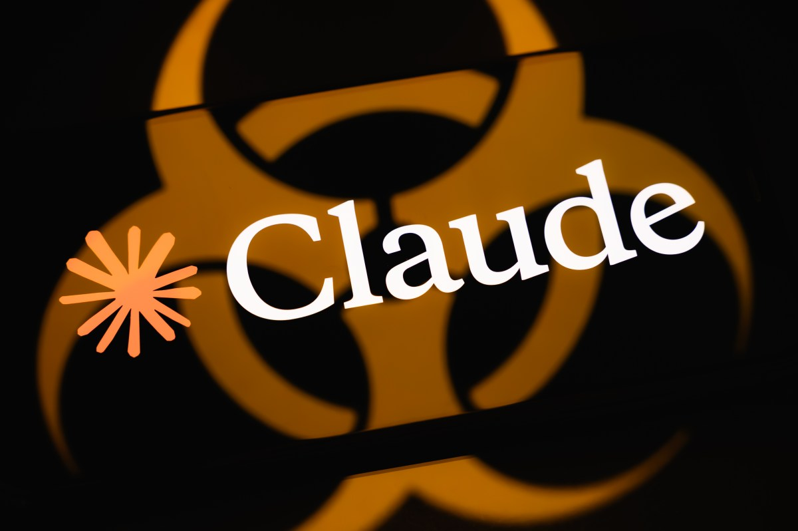
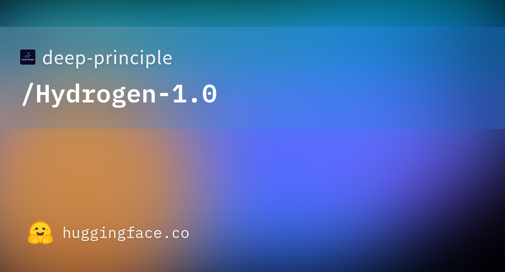
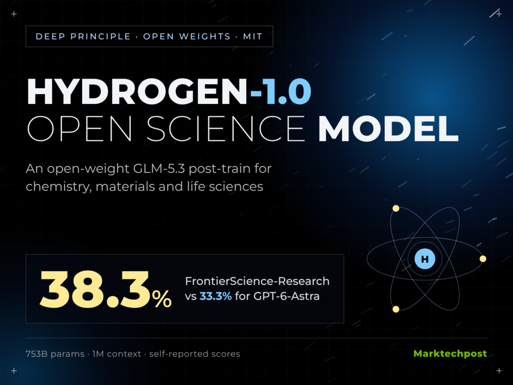
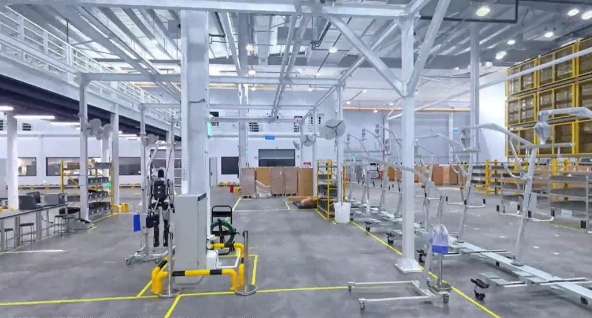
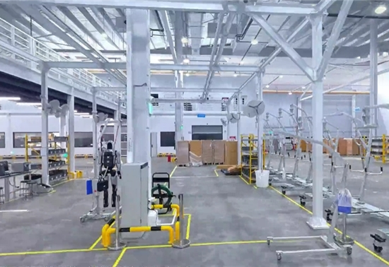

AI 产品情报 · 2026-11-04（周三）
本版覆盖媒体 / 一手源约 15 家（官方/一手 5 · 中文 7 · 外文 3） ：Apollo World 一手是百度 AI Day 现场口径，中文 InfoQ、雷峰网、IT之家、每日经济新闻、第一财经；FlashProve 一手是 Anthropic 研究页 + GitHub，外文 TechCrunch，X 官帖约 23.5 万曝光；Hydrogen-1.0 一手是 Deep Principle 博客 + Hugging Face（MIT），MarkTechPost/二级科技站跟进；Thinker-Sim 一手是优必选发布口径，中文新浪科技、盖世汽车、观点网、新京报。窗内未见量子位/晚点专稿，不编造。
今日要点（先看这四条）
百度披露 Apollo World ：面向物理 AI 的智能体驱动全模态世界模型；抛出「2+3」标尺；已进萝卜快跑全球化测试。叙事是「考官」不是「画师」——对世界模型公司极相关。Anthropic 开源 FlashProve ：zkSNARK 可证明推理原型；Llama 4 Maverick 单卡 H100 ≈110 tok/s、约 19MB/1k tokens；Apache 2.0，明确研究原型非生产。官帖约 23.5 万曝光。Deep Principle 发 Hydrogen-1.0 ：753B MoE（基于 GLM-5.3）科学后训练开源权重，MIT；自报 FSR 38.3% vs GPT-6-Astra 33.3%。11-02 发布，昨日漏报补上。优必选发 Thinker-Sim ：Real2Sim2Real 具身仿真平台；官方称渲染 +67.3%、8GPU 节点日均 390 小时仿真数据。媒体偏通稿，独立实测未见。
世界模型 · 自动驾驶 百度披露 Apollo World：智能体驱动全模态世界模型，抛出「2+3」标尺结论： 这是国产大厂里少见的「物理 AI 世界模型」正式叙事：明确不做「生成炫酷视频的画师」，要当无人驾驶安全性的「考官」。交通参与者全是可决策智能体、多模态观测、完整行程闭环——且已用于萝卜快跑全球化测试。对世界模型公司：标尺（因果/交互 + 物理准确/持久/实时）和「任务闭环 vs 单场景短片」可直接对照自家产品；「日行十万公里」等产能口号仍是厂商口径，暂无独立审计。
1. 发生了什么
北京时间 2026-11-03 ，深圳百度 AI Day·Apollo 专场，百度 Apollo 首次披露面向物理 AI 的智能体驱动全模态世界模型 Apollo World ，并提出世界模型「2+3」判断标准。百度称该模型已用于萝卜快跑全球化测试与验证。世界模型负责人杨泽、IDG 首席架构师王亮现场阐述。
一手/现场：百度 AI Day 口径（经媒体转述） · 中文：InfoQ 11-03 · 雷峰网 11-03 21:59 · IT之家 11-03 20:55 · 每日经济新闻 · 第一财经 · 外文短讯：Mint / China Tech News 系
2. 产品介绍
它想解决什么： 无人驾驶的安全 / 智能 / 规模「不可能三角」——长尾难靠实车覆盖、新区域试错贵、跨路段连续任务要规模化验证。Apollo World 把复杂交互与风险场景变成可重复、可控、可规模跑的虚拟测试，再反哺车端。
「2+3」标尺（官方）：
基础门槛「2」： 因果性（时间单向、由过去推未来，而非拼画面反推）；交互性（外部动作能改未来状态）。进阶「3」： 物理准确性（学到的能力回真车还能不能用）；持久性（长跑不漂移）；实时性（世界变复杂也不拖垮推理时延）。
三大能力叙事： ① 交通参与者全是可决策 AI 智能体（不是脚本道具）；② 实时相机 / 激光雷达等多模态观测；③ 任意起终点完整行程闭环（接单→载客→送达），而非单路口短片。
InfoQ 报道配图——看完应搞懂：这是百度 Apollo 专场披露的「物理 AI 世界模型」叙事图，不是消费级视频生成 demo。
官方 / 媒体转述关键运营数字（厂商口径）
萝卜快跑：全球 28 城；累计出行超 2300 万 次；自动驾驶总里程超 3.5 亿 公里，其中全无人超 2.4 亿 公里。
媒体转述：Apollo World 可「日行十万公里」——约等于一辆有安全员的实车连测约三年（行业分析口径，非第三方审计）。
以上里程与产能数字均来自百度/媒体通稿，未见独立复现。标尺本身可当产品验收语言；产能口号先打「待验」标签。
怎么自己看（12 分钟）
先读
InfoQ 或
雷峰网 里「2+3」与三大能力三段 → 再看
IT之家 的图文闭环说明（天气变、相机/雷达同步变；动作回传后环境更新）→ 问自己：自家世界模型有没有「任务闭环」还是只有「单场景短片」？公开可玩 demo / 权重本版未见。
视频： 现场演示以发布会流媒体为主，稳定可嵌的公开 MP4 未抽出；本版以内嵌报道配图 + 文字实测描述为准，不硬嵌无关口播。
3. 导致什么影响（含竞品）
vs Genie 4 / 混元 Hy-Nomas / Matrix-Game / EdenLive 等「可玩视频世界」： Apollo 明确押「物理因果 + 安全验证」，不是键鼠漫游或美术渲染。竞品若主打消费/游戏交互，标尺不同，不宜横比画质。vs NVIDIA Cosmos Sim-*、传统交通仿真（Carla 等脚本 NPC）： Apollo 强调 NPC 全智能体化 + 真实运营数据飞轮；Cosmos 偏通用机器人/操作仿真。选型看你要的是 Robotaxi 闭环还是通用机器人策略。vs Mundo / 智元等具身世界模型线： Apollo 先落在车上（已有规模运营数据），并称技术栈可延展到机器人——叙事相邻，交付物不同。
对我们（世界模型公司）
直接可抄：① 用「2+3」当对外/对内验收语言；② 评测从「像不像」改成「动作注入后下一状态是否因果正确、长跑是否漂移、时延是否稳住」；③ 优先做完整任务闭环（起终点订单），而不是只刷单场景短视频。萝卜快跑的数据飞轮提醒：没有真实运营闭环，虚拟「日行十万」难自证。
4. 用户如何评价
InfoQ / 雷峰网 / IT之家 同日长文
每经 / 一财短讯
窗内未见量子位/机器之心同级专稿
独立开发者实测未见（未开放权重/公开 demo）
正面： 「考官不是画师」定位清晰；「2+3」给行业一个可争论的尺子；已绑萝卜快跑真实运营，不是纯论文。谨慎： 公开可复现材料少；「日行十万」「AGI 时刻」营销词重；外文多为短讯转述，无深度评测。可信度： 现场口径经多家中文科技媒体交叉一致；产能与里程=厂商声明；产品可用性待开放。
安全 · 可证明推理 Anthropic 开源 FlashProve：zkSNARK 证明「这话真是这台模型吐的」结论： 这是 Anthropic Frontier Red Team 把「可证明推理」从论文推到可跑原型：提供商对权重做承诺，再对每次回复出零知识证明；用户/审计员不用权重、不用 GPU 就能验。单卡 H100 上 Llama 4 Maverick（400B MoE、4-bit）约 110 tok/s 出证，约 19 MB / 1024-token 请求 ——仍是原生推理的约 70–95× GPU 时间，且官方写明研究原型、不部署生产。对监管 pacing / 防偷换模型 / 防篡改有长期意义；别当成明天就能塞进 Chat API 的功能。
1. 发生了什么
Anthropic 研究页标注发布 2026-11-02 ；官方 X @AnthropicAI 主帖时间约 2026-11-03 20:10 UTC （北京时间 11-04 04:10），成稿前约 23.5 万曝光 / 3084 赞 / 1103 书签 / 276 转发 。同步放出：博客、技术报告、协议说明、C++/Lean 验证器、Lean 形式化证明；代码 Apache 2.0 。
一手：Anthropic · Progress on provable inference · GitHub anthropics/FlashProve · 官帖 · 外文：TechCrunch 11-03
2. 产品介绍
它想解决什么： 今天你无法从输出 alone 确认「这是不是你付钱买的那台模型」——路由可能偷换成便宜模型，攻击者可能篡改 token 流，评测方也难绑死权重。FlashProve 用 zkSNARK：离线对权重做短指纹承诺；在线对（prompt, output）出证明——验过即说明被承诺的那组权重 在该输入上产出了这些 token；证明本身不泄露权重。
官方关键数字（Llama 4 Maverick 4-bit，单 H100）：
出证吞吐约 110 tokens/s （24 请求一批约 223 秒）
证明大小约 18.78 MB / 1024-token 窗口请求
验证：24 核 CPU 约 17 秒 /证明（单线程约 21 秒）；承诺文件约 6.5 MB
相对 vLLM 同批：证明侧约 70–95× 单卡 GPU 时间
限制写进官方 Limitations：整数贪婪解码版本；上下文目前到 1024；不隐藏架构只隐藏权重；快路径 C++ 验证器无形式化保证（Lean 慢验证器有）；明确「中间进度，非完成议程」，无上线 Anthropic 生产计划（TechCrunch 同述）。
Anthropic 研究页 OG——看完应搞懂：这是「可证明推理」研究发布视觉，不是新 Claude 聊天功能上线。

TechCrunch 配图——看完应搞懂：外文主流科技媒体把故事读成「证明模型身份」，并强调无部署计划。
怎么自己看（15 分钟）
打开
研究页 → 先读 Executive summary 四条与 Limitations → 再扫 Challenge 1–4（pacing / 篡改 / provenance / 审批）→ 有兴趣下
GitHub 看 README 与 guide/what-is-proved.md。中文深度稿窗内稀缺，以英文一手为准。
视频： 官方以文+代码+Lean 可视化为主，无单独产品演示片；本版不嵌无关口播。
3. 导致什么影响（含竞品）
vs 早期 zkML（zkLLM / EZKL / VerInf / DeepProve / Attestable 等）： 官方自比：此前同模型 VerInf 约 0.02 tok/s、证明近百 GB；FlashProve 同模型 110 tok/s、19 MB。Attestable 报密模 31B 约 53–77 tok/s 但未开源库。差异化是开源 + Lean 顶层陈述 + 前沿 MoE 规模。vs TEE / 可信硬件证明： Anthropic 强调软件密码学与硬件互补；本原型不依赖厂商 TEE。对产品/监管： TechCrunch 点名防「偷偷换便宜模型 / 虚报成绩」；RSP 里「inference verification」目标相关——但今天仍是研究工件。
对我们
短期不必接入推理路径；中期若要对外提供「评测绑死权重」或合规审计，关注证明开销能否压到 <10×、上下文能否拉到真实会话长度。世界模型若对外 API 出视频/动作，同类「输出归因」问题会再出现——先盯协议与验收语言。
4. 用户如何评价
官帖 ~23.5 万曝光 / 3084 赞 / 1103 书签
@scaling01 解读帖 ~3.3 万曝光
@sweis 早鸟帖 ~9.5 万曝光
Succinct 等密码学圈转发
TechCrunch 同日英文稿
正面： 密码学/安全圈认为是可证明推理的实质跃迁；开源 + Lean 降低「黑盒宣称」；用例（防偷换、评测归因）说得清。谨慎： 70–95× 开销、1024 上下文、贪婪整数模型、非生产——评论区与 Limitations 一致；中文科技媒体窗内几乎无专稿。
开源 · 科学模型 Deep Principle 发布 Hydrogen-1.0：753B 科学后训练，MIT 开权重结论： 这是「通用开源底座 + 实验室轨迹后训练」路线的科学模型：基于智谱 GLM-5.3 ，总参约 753B MoE，MIT 权重；自报 FrontierScience-Research（FSR）通过率 38.3% vs GPT-6-Astra 33.3% ，并在材料发现多轮推荐上领先 Astra/Kimi-K3。价值在可复现权重 + ELN/发现轨迹叙事；分数与内部任务均为厂商评测，独立复现未见。适合科学 Agent / 实验室工具链的人马上下载试，别当「已超越闭源科学超智能」通稿信。
1. 发生了什么
北京时间约 2026-11-02 ，Deep Principle 发布 Hydrogen-1.0 技术博客与 Hugging Face / ModelScope 权重（MIT）。昨日（11-03）日报未收录，本版补报。另提供 NeuroSpark API 与 Mira「AI Scientist」入口。
一手：Introducing Hydrogen-1.0 · Hugging Face · 二级：MarkTechPost · deAI
2. 产品介绍
它想解决什么： 闭源实验室已有用 AI 助发现的案例，但权重不可复现；Hydrogen 想把「领域知识 + 实验记录 + 发现轨迹」灌进开源底座，让科研人员可检查、可改、可接工具。
模型卡要点（HF）： 基座 GLM-5.3；上下文最长约 1M 、最大输出约 128K ；BF16 全量 + NVFP4 / MXFP4 量化分仓；建议 SGLang 多卡部署。
训练叙事： SFT + RL；数据四块——领域知识、科研场景反馈、全周期 ELN 实验记录、开放式发现轨迹。博客展示：高分子 MD 工作流自修拓扑、Ireland–Claisen 反应网络扩展、NMR 结构辨识、实验室编译（虚环境先抓错再实跑）。

Hugging Face 模型卡 OG——看完应搞懂：这是可下载的开源科学模型条目，不是仅 API 的闭源助手。

科技站报道配图——看完应搞懂：传播侧强调「753B 开源科学发现」；细节以官方博客图 1–5 为准。
官方自报评测（博客，待独立复现）
FSR（FrontierScience-Research）： Hydrogen 38.3% vs GPT-6-Astra 33.3%（厂商/二级媒体转述）内部科研任务： 科学计算 / 一步正向反应预测上，相对 Astra 最大思考分别高约 5.13 / 4.76 个百分点；NMR 结构解析 Astra 仍高约 3.33 点TMC 材料多轮： 第 5 轮 mean best-so-far HOMO–LUMO gap：Hydrogen 4.318 eV vs Astra 3.689 vs Kimi-K3 3.353
完整训练数据与配方未随权重公开；Astra/Opus 在部分实验设计题上因拒答过多被省略对比。把自报分当方向信号，不当排行榜终局。
怎么自己看（15 分钟）
读
官方博客 Figure 1–3 与三个实践案例标题 → 打开
HF 卡 确认许可/量化分仓/SGLang 启动命令 → 有卡再拉权重；没卡至少看博客里「lab compilation 抓错 tip」例子，理解它想卖的工作流。
视频： 官方博客页内嵌介绍视频（需官网播放）；本环境未稳定镜像 MP4，请直接打开博客页观看。看完应搞懂：定位是科学发现助手，不是通用聊天榜刷分模型。
3. 导致什么影响（含竞品）
vs GPT-6-Astra / Claude Opus 科学能力： Hydrogen 主打开权重可复现 + 实验室轨迹；闭源在部分任务仍强（如 NMR）。产品含义：要可审计、可私有化部署时 Hydrogen 有位置。vs Kimi K3 / GLM-5.3 本家： 同表显示后训练相对基座与开源前沿有增益；差异化是化学/材料/生命科学 ELN 与发现轨迹，不是又一个通用对话模型。vs 垂直科学小模型 / 工具链（分子、蛋白专用）： Hydrogen 走「大 MoE 通用科学推理 + 工具」；专用模型仍可能在窄任务更稳。
对我们
「失败尝试也进轨迹」与世界模型/Agent 训练同构——可参考把仿真失败 rollout 当一等公民数据。若做科学或具身数据飞轮，ELN 式「意图-步骤-观察-修订」日志格式值得抄。
4. 用户如何评价
HF 模型卡已上线（MIT）
英文科技站摘要跟进
中文主流 AI 媒体窗内几乎无专稿
社区长测 / 独立榜复现未见
正面： 真开权重 + MIT；科学工作流 demo 具体（MD / 反应网 / NMR / 实验编译）；对开源科学社区是可下载的新底座。谨慎： 753B 部署门槛高；自报分未独立复核；中文传播弱于同窗大厂发布。
具身 · 仿真平台 优必选发布 Thinker-Sim：Real2Sim2Real 一站式场景重建、数据合成与评测结论： Thinker-Sim 是优必选把「真机场景 → 仿真资产 → 规模合成数据 → 标准化评测 → 回真机」做成产品化平台的一步。官方数字醒目（渲染效率 +67.3%、8GPU 节点日均 390 小时仿真数据、通信效率 +400%），并带 Thinker-GS、SimReady、Ulab-Agent 自然语言编排。但窗内报道几乎全是通稿转载，未见独立实测或可公开试用入口 ——先当「具身数据基础设施」动向记一笔，别当已验证的 SOTA 仿真引擎。
1. 发生了什么
北京时间 2026-11-02 ，优必选宣布具身智能仿真平台 Thinker-Sim 正式发布。新浪科技、盖世汽车、观点网、新京报等跟进；内容高度同源。
中文：新浪科技 11-02 10:19 · 盖世汽车 · 观点网 · 新京报 · 42号电波
2. 产品介绍
它想解决什么： 真机采集贵、仿真搭场景难、算法验证周期长。Thinker-Sim 宣称覆盖：场景重建与资产生成 → 规模仿真数据合成 → 感知/导航/操作统一评测。
三大块（通稿）：
场景重建与资产： 自研 Thinker-GS 高保真重建 + SimReady 资产自动生成；工业工厂、商业展厅等。数据合成： 自研渲染与大规模并行；官方称渲染效率 +67.3% ，单节点（8 GPU）日均约 390 小时 仿真数据；通信模块效率 +400% 以上。能力评测： 感知/导航/操作统一体系；场景、光照、纹理、材质随机化。
体验向： 标准化任务模板一键启动并推流；可视化零代码编排（称适配 90%+ 目标场景）；Ulab-Agent 支持自然语言完成场景创建、配置、编排与调度。

盖世汽车文内配图——看完应搞懂：传播视觉强调人形/具身在仿真环境中的作业，不是消费级 3D 聊天世界。

盖世汽车新闻缩略图——看完应搞懂：这是产业资讯级曝光，不是开源 repo 演示截图。
怎么自己看（8 分钟）
读
新浪科技短讯 对齐三块能力 → 再扫
盖世 是否有额外图 → 去优必选官网人形/平台页找是否出现 Thinker-Sim 产品入口（成稿时公开自助试用链接未见）。有渠道再要 demo 账号做「重建→合成→评测」一条龙。
视频： 通稿未附可稳定外链的官方长演示；本版不嵌无关口播。
3. 导致什么影响（含竞品）
vs Isaac Sim / MuJoCo / ManiSkill / RoboCasa 等： Thinker-Sim 强调 Real2Sim 资产流水线 + 中文产业场景（工厂/展厅）+ 自然语言编排；生态与开源社区深度尚不清。vs Mundo / 智元仿真与数据飞轮、NVIDIA Cosmos： 同属「仿真产数据」赛道；优必选绑自家人形落地叙事。选型看你要开放可复现还是厂商交钥匙。vs Apollo World： Apollo 偏 Robotaxi 虚拟城市与安全考官；Thinker-Sim 偏人形具身操作数据与评测——相邻但场景不同。
对我们
可关注两点产品化动作：① SimReady 资产自动生成是否真能降低搭景人天；② 「自然语言编排仿真任务」会不会变成具身数据生产的默认 UX。数字先记着，等可对比的公开基准或第三方工时数据再更新。
4. 用户如何评价
新浪 / 盖世 / 观点 / 新京报 通稿级
X / 开发者社区热度低
独立评测未见
正面： Real2Sim2Real 产品叙事完整；给出可引用的产能数字；自然语言编排降低仿真门槛的方向对。批评 / 空缺： 报道同质化严重；无开源、无公开基准、无第三方工时对比；「90%+ 场景」缺少定义。
今日落选（简述）
Kimi / 其他国产权重传闻——窗内未确认正式发布。
Apple Siri 第三方 / Netflix Discover 等——偏生态合作传闻，深度与世界模型相关度不足。
SenseNova / LongCat / MOSS / LifeVal——已在 11-03 报，无实质新版本。
PixVerse×OpenAI、小米奖项、极智嘉规划等——热度或产品完整度不够，不硬凑。
产品雷达 · 2026-11-04 · 仅供阿汤内部决策参考 · 事实以一手链接为准